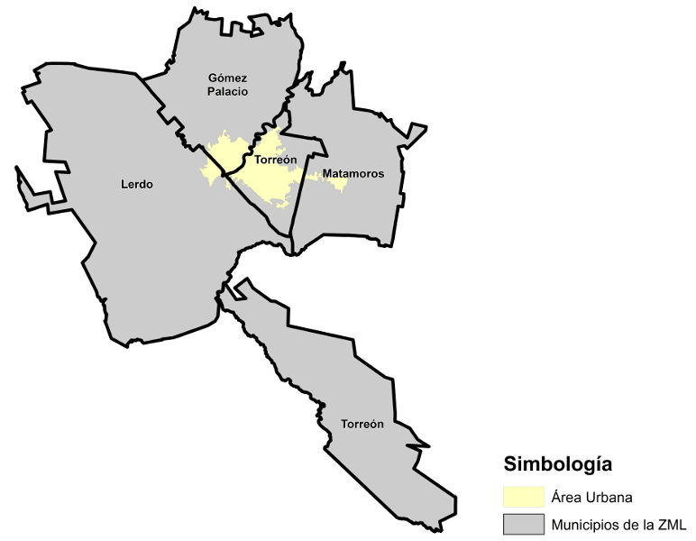

La gestión de las zonas metropolitanas en México es considerado uno de los instrumentos reguladores de la planeación federal, como se observa en la reciente publicación de la Ley General de Asentamientos Humanos, Ordenamiento Territorial y Desarrollo Urbano, en donde uno de sus principales temas de interés es la densificación, la consolidación urbana y uso eficiente del territorio.
Los pronósticos de expansión urbana de la Zona Metropolitana de La Laguna (ZML) apuntan hacia un crecimiento rápido que propicia un cambio de uso de suelo agropecuario a urbano, requiriendo a 30 años, entre 10,000 y 25,000 hectáreas según el tipo de densidad que se elija propiciar, de acuerdo con el análisis Urbis Internacional.
Esto significa que a un mayor crecimiento horizontal, existe un mayor gasto de infraestructura y de servicios públicos, que debido a las largas distancias y a la poca densidad de población disminuye la calidad de vida de cualquier metrópoli.
Actualmente México cuenta con 59 zonas metropolitanas en donde habita el 60% de la población nacional. Uno de los principales retos que tienen hoy estas zonas es la búsqueda de estrategias e instrumentos que desalienten la dispersión de las poblaciones en las zonas urbanas promoviendo la implementación de una nueva agenda urbana, acorde a las tendencias del urbanismo moderno. Estas tendencias marcan establecer límites de dispersión en los territorios habitables, buscando un crecimiento territorial planeado, viendo más allá de la inmediatez de la permisibilidad de construir en la ciudad.
Estudios como los llevados a cabo por el Marron Institute of Urban Management del NYU-STERN titulado “Reporte México (2015)”, elaborado para el Senado de la República, promueven que los municipios impulsen instrumentos útiles que incentiven el mejor uso del suelo favoreciendo principalmente: el Crecimiento por Densificación y el Crecimiento Territorial Planeado.
Realidad urbana en la laguna
En este sentido, es necesario analizar la situación de la ZML y cuáles son los posibles escenarios de crecimiento futuro:
La superficie total de los cuatro municipios de la ZML es de 502,779.38 has. de la cual 22,625.73 has (5.90%) es superficie urbana ocupada por viviendas, servicios, equipamientos e infraestructura. De éste, el uso habitacional representa la mayor ocupación de la superficie urbana con un total de 15,134.44 has. (66.89 %).
Los usos de suelo en la ZML, muestran que el uso mixto (combinación de distintos usos de suelo dentro de una misma comunidad) ocupa el 13.43 % de la superficie urbana, la industria ocupa el 11.04 % y el equipamiento el 5.60 %.
A manera de ejemplo, y según cálculos realizados por Urbis Internacional, existen escenarios de crecimiento probables en base a proyecciones de vivienda y población, donde se aprecia la superficie en hectáreas que por uso de suelo será requerido al año 2042.
El suelo requerido en un escenario medio propiciando vivienda en baja densidad (18 viv/Ha) demandaría 50,350 Has.; vivienda en media densidad (25 viv/Ha) demandaría 36,252 Has.; vivienda en media-alta densidad (40 viv/Ha) demandaría 22,658 Has.
Con este escenario, resulta preocupante la combinación de la expansión urbana con los costos ambientales que provoca, así como las necesidades de inversión futura, ya que en la actualidad ya se presentan serias deficiencias, por lo que sumadas a las tendencias y propuestas institucionales, imponen la necesidad de plantear acciones a corto plazo para mitigar los costos, fortalecer las fuentes de recursos, ejercerlos de manera eficiente y tomar medidas para contener la dispersión urbana.
La Densidad media urbana (DMU) de la Zona metropolitana de la Laguna es de 44 hab./Ha, IMPLAN propone hoy entre sus metas de visión metropolitana propiciar políticas públicas para inhibir el crecimiento desordenado y disperso de las ciudades de la ZML, promoviendo eficientar áreas urbanizadas que cuentan con infraestructura, incrementando la densidad de población a 90 hab./Ha.
